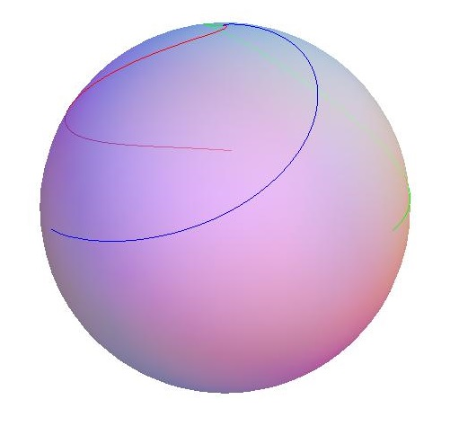

Bob is a manufacturer of nanobots and wants to impress his customers by giving them a ball coloured by his new nanobots as a present.
His nanobots can be programmed to select and locate exactly one other bot precisely and, after activation, move towards this bot along the shortest possible path and draw a coloured line onto the surface while moving. Placed on a plane, the bots will start to move towards their selected bots in a straight line. In contrast, being placed on a ball, they will start to move along a geodesic as the shortest possible path. However, in both cases, whenever their target moves they will adjust their direction instantaneously to the new shortest possible path. All bots will move at the same speed after their simultaneous activation until each bot reaches its goal.
Now Bob places $n$ bots on the ball (with radius $1$) equidistantly on a small circle with radius $0.999$ and programs each of them to move toward the next nanobot sitting counterclockwise on that small circle. After activation, the bots move in a sort of spiral until they finally meet at one point on the ball.
Using three bots, Bob finds that every bot will draw a line of length $2.84$, resulting in a total length of $8.52$ for all three bots, each time rounded to two decimal places. The coloured ball looks like this:

In order to show off a little with his presents, Bob decides to use just enough bots to make sure that the line each bot draws is longer than $1000$. What is the total length of all lines drawn with this number of bots, rounded to two decimal places?
solve(n=3) → ?solve() → ?